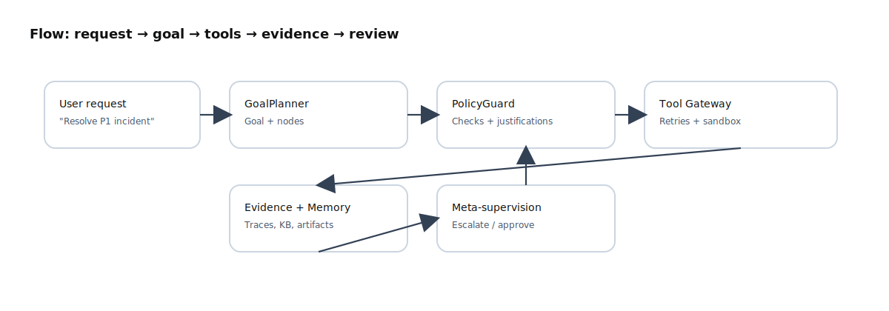

Ninai can be demoed as a single process, but production Ninai is a platform: tenancy boundaries, policy enforcement, repeatable runs, safe tool execution, and operational discipline. This chapter gives you reference architectures, patterns, and practical checklists.
A useful mental model
Think of Ninai as a safe automation platform that happens to use LLMs for planning and language. The model is not the system of record; your databases and event logs are. The model should never be trusted to bypass policy. Your platform should still be safe if the model output is wrong or adversarial.
Three truths that keep you out of trouble
All side effects must go through a tool boundary.
All reads and writes must be tenant-scoped (and enforced by RLS).
Everything important must be replayable and auditable.
Architecture principles
Principle 1: Decompose into primitives
Agents are orchestrators, not monoliths. Keep the primitives separate so you can test and scale them independently:
Goals: goal graphs, nodes, dependencies, evidence links, and lifecycle state.
Memory: retrieval, storage, promotion, and retention policies.
Tools: connectors with explicit schemas, timeouts, retries, and audit records.
Policy: deterministic allow/deny/approve decisions enforced in code.
Supervision: risk-based review, escalation, and approval workflows.
Principle 2: Fail-closed default posture
Fail-closed means: when uncertain, the system stops and asks. It is the correct default for banking, AIOps remediation, enterprise security, and any environment where the cost of being wrong is high.
Principle 3: Design for the two loops
Every production agent system has two loops:
Execution loop: plan -> tool calls -> evidence -> outcome.
Learning loop: what worked, what failed, what is reliable, what requires approval, what should be promoted to durable knowledge.
Ninai features like self-model signals, meta-supervision, and simulation exist to make the learning loop safe and controlled.
Core runtime architecture
Figure 4-1. Agents orchestrate primitives; observability and audit are first-class.
What belongs in the API tier
Authentication and request signing (API keys, JWTs, mTLS depending on your environment)
Tenant routing and tenancy context propagation
Rate limiting, quotas, and backpressure signals
Fast CRUD endpoints for goals, memory metadata, and run status
What belongs in worker tier
LLM planning and structured output validation
Memory retrieval and evidence linking
Tool orchestration through the tool boundary
Meta-review and escalation decisions
Architectural anti-pattern
Putting long-running agent work (LLM calls, tool calls, retries) inside a single HTTP request will eventually collapse under load. You want run IDs, queues, and background workers.
Execution model: runs, workers, and queues
The most stable production model is: clients create a run, the platform processes it asynchronously, and clients subscribe to run events. This is how you achieve reliability, replay, and cost control.

Figure 4-2. Request to goal to policy to tools to evidence to supervision.
Run records
A run should have an immutable timeline: inputs, decisions, tool calls, and outputs. Architecturally, this is your debugging superpower.
Queues: your load shedder
Queues are not just for throughput. They are how you prevent a thundering herd from taking down the system. You can scale workers based on queue depth and processing time.
Tool boundary: sandboxing, idempotency, approvals
Tools are where the world changes. Treat tools like a "kernel boundary" for the agent: strict input validation, explicit permissions, and safe failure semantics.
Idempotency and retries
Require an idempotency key for any tool that mutates state.
Make retry behavior explicit per tool (some tools are safe to retry, some are not).
Persist the tool call record before execution so you can deduplicate.
Approvals for high-risk actions
Approvals should be a first-class workflow. Examples: "restart production", "freeze account", "email customer segment", "publish knowledge base article".
Practical policy rule
Separate tools into read-only tools (low risk) and mutating tools (higher risk). Default mutating tools to approval-required unless a tenant explicitly opts into automation for that tool.
Memory at scale: TTL, promotion, governance
Memory is both cost and risk. Architect memory with clear lifecycle rules:
When external tools are slow (cloud APIs, ticketing systems), your system needs strict timeouts, circuit breakers, and queue-based execution. Otherwise you will accumulate stuck runs and amplify incidents.
Case studies
Retail: bundle recommendations with approvals
Challenge: a junior dev prototype sends promotions directly and causes wrong discounts.
Solution: separate planning from action, require approval for send-email tool, enforce segment constraints, and store evidence for all recommendations.
Banking: fraud triage with least privilege
Challenge: the business wants automatic account freezes.
Solution: allow investigation tools automatically, require approval for freeze tool, enforce RLS, and persist the policy decision record for audit.
NASA-like: mission planning with phase gates
Challenge: mission transitions require high assurance.
Solution: represent mission phases as goal nodes, require meta-supervision for phase transitions, and stage production actions after simulation.
Customer support: evidence-based answers
Challenge: hallucinated answers are unacceptable.
Solution: enforce answer-only-with-evidence policy, attach KB articles as evidence links, and measure reopened-ticket rate as a quality metric.
Architect checklists
Deployment checklist
Tenant identity required end-to-end; deny on ambiguity.
Workers stateless; runs evented and replayable.
Tool gateway isolated with allowlists and egress controls.
Datastores have backups and tested restore procedures.
Security checklist
RLS enabled and tested for tenant isolation.
Secrets never logged; rotated; scoped to least privilege.
Approval workflow exists for high-risk tool actions.